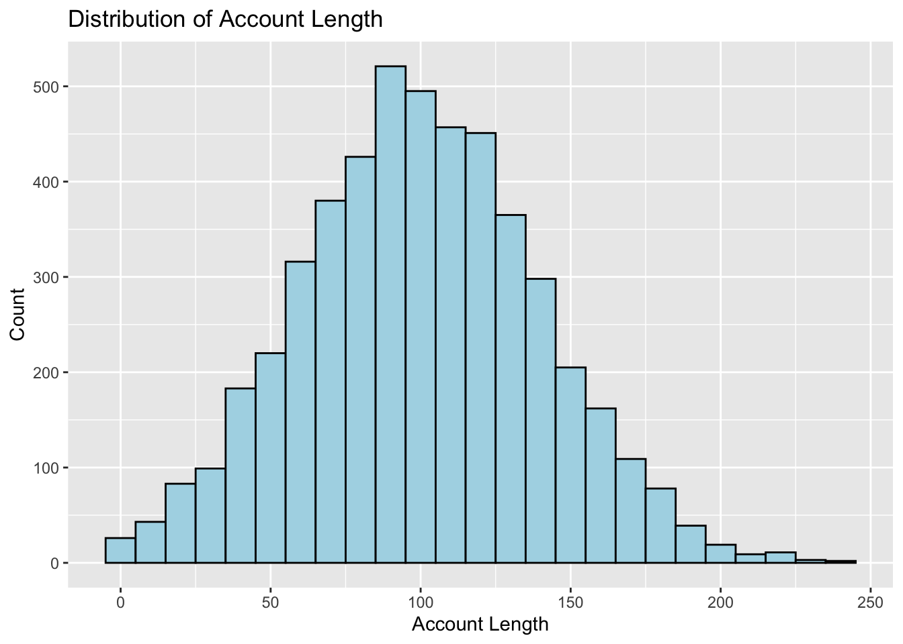
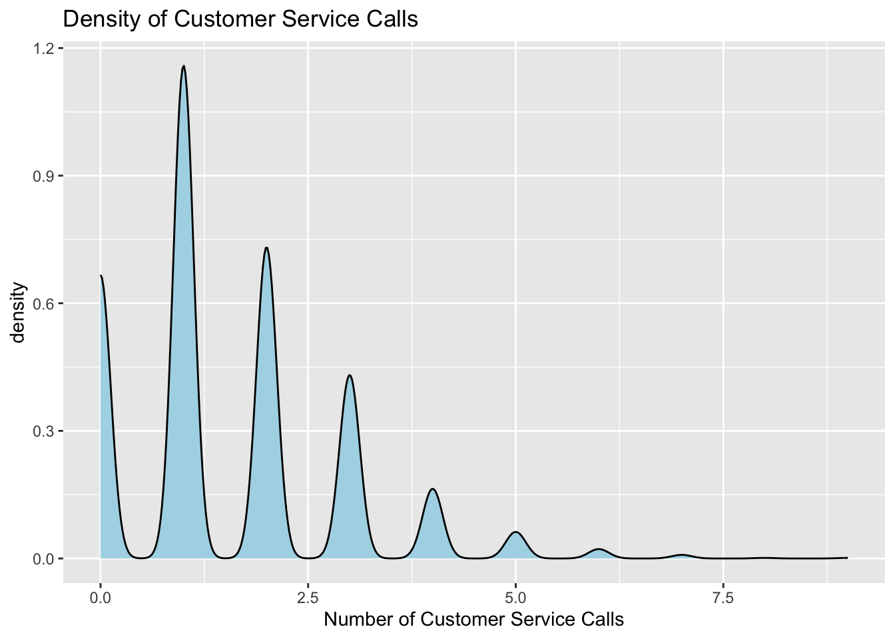
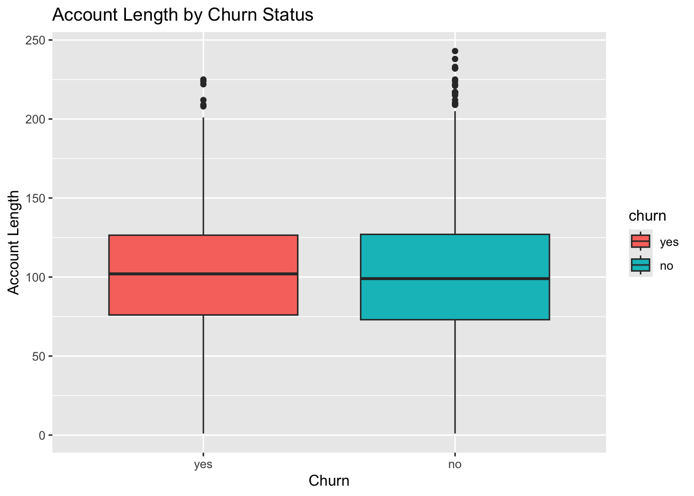
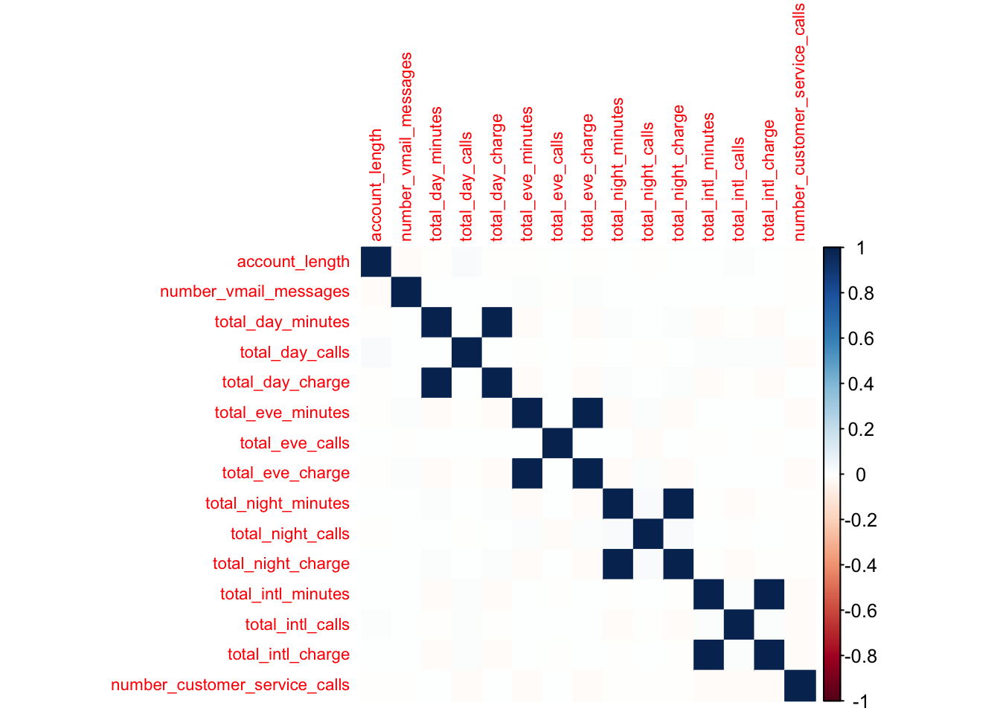
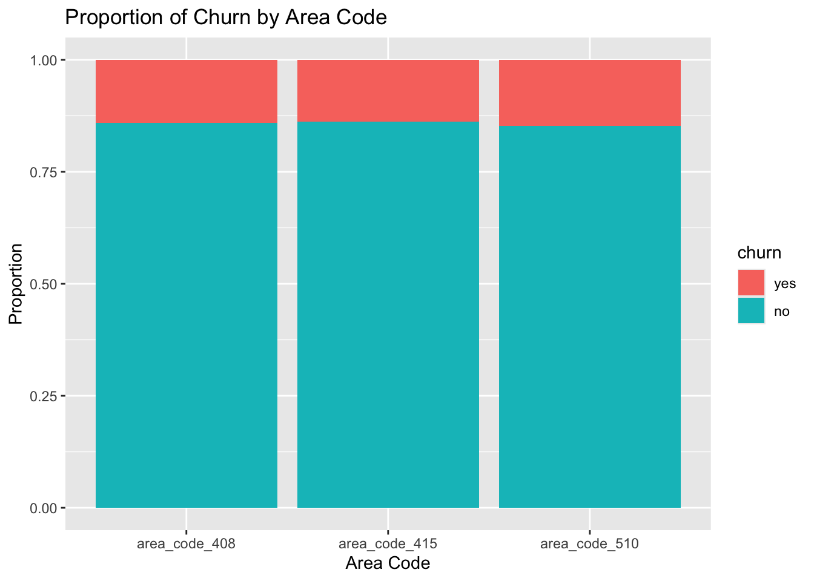

# Load necessary libraries
library(caret)
library(tidyverse)
library(e1071)
library(randomForest)
library(nnet)
library(modeldata)
library(ggplot2)
library(dplyr)
library(corrplot)
library(GGally)
library(dplyr)
library(rsample)
library(recipes)
library(rpart)
library(ranger)Homework 3
Reminder: All homework solutions must be written up independently, even though you are allowed to discuss with other students. You need to save your homework assignment in a pdf/html format and upload it with the R code (.R or .rmd) into the Canvas before 11:59pm CT on the due day. No late homework assignment will be graded in any circumstance.
Problem 1 (25 points):
In Homework 1, Problem 3, we described a data set which contained 96 oil samples each from one of seven types of oils (pumpkin, sunflower, peanut, olive, soybean, rapeseed, and corn). Gas chromatography was performed on each sample and the percentage of each type of 7 fatty acids was determined. We would like to use these data to build a model that predicts the type of oil based on a sample’s fatty acid percentages. These data can be found in the caret package using data(oil). The oil types are contained in a factor variable called oilType. The types are pumpkin (coded as A), sunflower (B), peanut (C), olive (D), soybean (E), rapeseed (F) and corn (G). In R
# Load the data
?oil
data(oil)str(oilType) Factor w/ 7 levels "A","B","C","D",..: 1 1 1 1 1 1 1 1 1 1 ...table(oilType)oilType
A B C D E F G
37 26 3 7 11 10 2 - Given the classification imbalance in oil Type, describe how you would create a training and testing set.
set.seed(123)
oil_data <- as.data.frame(fattyAcids)
oil_data$oilType <- oilType
train_index <- createDataPartition(oil_data$oilType, p = 0.7, list = FALSE)
train_data <- oil_data[train_index, ]
test_data <- oil_data[-train_index, ]
preProcValues <- preProcess(train_data[,-ncol(train_data)], method = c("center", "scale"))
train_data[,-ncol(train_data)] <- predict(preProcValues, train_data[,-ncol(train_data)])
test_data[,-ncol(test_data)] <- predict(preProcValues, test_data[,-ncol(test_data)])
ctrl <- trainControl(method = "cv", number = 10, classProbs = TRUE, summaryFunction = multiClassSummary)colSums(is.na(train_data)) Palmitic Stearic Oleic Linoleic Linolenic Eicosanoic Eicosenoic
0 0 0 0 0 0 0
oilType
0 train_data_clean <- na.omit(train_data)
preProcess_missing <- preProcess(train_data, method = 'medianImpute')
train_data_clean <- predict(preProcess_missing, train_data)Which classification statistic would you choose to optimize for this problem and why? When the classes are imbalanced, I would optimize the F1 score.
Split the data into a training and a testing set, pre-process the data, and build models and tune them via resampling described in Chapter 12. Clearly list the models under consideration and the corresponding tuning parameters of the models.
- k-Nearest Neighbors (k-NN):
set.seed(123)
ctrl <- trainControl(method = "cv", number = 10)
knn_model <- train(oilType ~ ., data = train_data_clean, method = "knn", trControl = ctrl, tuneLength = 10)
knn_modelk-Nearest Neighbors
70 samples
7 predictor
7 classes: 'A', 'B', 'C', 'D', 'E', 'F', 'G'
No pre-processing
Resampling: Cross-Validated (10 fold)
Summary of sample sizes: 62, 61, 62, 65, 63, 62, ...
Resampling results across tuning parameters:
k Accuracy Kappa
5 0.9375000 0.9195499
7 0.9138889 0.8913839
9 0.8902778 0.8606707
11 0.8500000 0.7986789
13 0.8333333 0.7649739
15 0.8208333 0.7493668
17 0.7629365 0.6623458
19 0.7629365 0.6633254
21 0.7179365 0.5943018
23 0.7054365 0.5779753
Accuracy was used to select the optimal model using the largest value.
The final value used for the model was k = 5.k-Nearest Neighbors (kNN)
Best k: 5
Accuracy: 0.9375
Kappa: 0.9195499
Support Vector Machine (SVM):
set.seed(123)
svm_model <- train(oilType ~ ., data = train_data_clean, method = "svmRadial", trControl = ctrl, tuneLength = 10)
svm_modelSupport Vector Machines with Radial Basis Function Kernel
70 samples
7 predictor
7 classes: 'A', 'B', 'C', 'D', 'E', 'F', 'G'
No pre-processing
Resampling: Cross-Validated (10 fold)
Summary of sample sizes: 62, 61, 62, 65, 63, 62, ...
Resampling results across tuning parameters:
C Accuracy Kappa
0.25 0.8573810 0.8067221
0.50 0.9263889 0.9070702
1.00 0.9500000 0.9378462
2.00 0.9750000 0.9686154
4.00 0.9638889 0.9550595
8.00 0.9638889 0.9550595
16.00 0.9638889 0.9550595
32.00 0.9638889 0.9550595
64.00 0.9638889 0.9550595
128.00 0.9638889 0.9550595
Tuning parameter 'sigma' was held constant at a value of 0.1001887
Accuracy was used to select the optimal model using the largest value.
The final values used for the model were sigma = 0.1001887 and C = 2.Support Vector Machines (SVM):
sigma = 0.1001887
C = 2
Accuracy: 0.975
Kappa: 0.9686154
Random Forest:
set.seed(123)
rf_grid <- expand.grid(mtry = seq(1, ncol(train_data) - 1, length.out = 6)) # Adjust the length.out to the desired number of values
rf_model <- train(oilType ~ ., data = train_data, method = "rf", trControl = ctrl, tuneGrid = rf_grid)
rf_modelRandom Forest
70 samples
7 predictor
7 classes: 'A', 'B', 'C', 'D', 'E', 'F', 'G'
No pre-processing
Resampling: Cross-Validated (10 fold)
Summary of sample sizes: 62, 61, 62, 65, 63, 62, ...
Resampling results across tuning parameters:
mtry Accuracy Kappa
1.0 0.9625 0.9523009
2.2 0.9750 0.9679487
3.4 0.9750 0.9679487
4.6 0.9550 0.9405111
5.8 0.9550 0.9405111
7.0 0.9550 0.9405111
Accuracy was used to select the optimal model using the largest value.
The final value used for the model was mtry = 2.2.Random Forest
- mtry: 2.2
- Accuracy: 0.975
- Kappa: 0.9679487
Support Vector Machines performs the best with an accuracy of 97.50% and a Kappa of 0.9686.
- Of the models presented in this chapter, which performs best on these data? Which oil type does the model most accurately predict? Least accurately predict?
# Generate predictions for each model
knn_pred <- predict(knn_model, test_data)
svm_pred <- predict(svm_model, test_data)
rf_pred <- predict(rf_model, test_data)
# Create confusion matrices
knn_cm <- confusionMatrix(knn_pred, test_data$oilType)
svm_cm <- confusionMatrix(svm_pred, test_data$oilType)
rf_cm <- confusionMatrix(rf_pred, test_data$oilType)# Print confusion matrices
print(knn_cm)Confusion Matrix and Statistics
Reference
Prediction A B C D E F G
A 10 0 0 0 0 0 0
B 1 7 0 0 0 0 0
C 0 0 0 0 0 0 0
D 0 0 0 2 0 0 0
E 0 0 0 0 3 0 0
F 0 0 0 0 0 3 0
G 0 0 0 0 0 0 0
Overall Statistics
Accuracy : 0.9615
95% CI : (0.8036, 0.999)
No Information Rate : 0.4231
P-Value [Acc > NIR] : 7.058e-09
Kappa : 0.9467
Mcnemar's Test P-Value : NA
Statistics by Class:
Class: A Class: B Class: C Class: D Class: E Class: F
Sensitivity 0.9091 1.0000 NA 1.00000 1.0000 1.0000
Specificity 1.0000 0.9474 1 1.00000 1.0000 1.0000
Pos Pred Value 1.0000 0.8750 NA 1.00000 1.0000 1.0000
Neg Pred Value 0.9375 1.0000 NA 1.00000 1.0000 1.0000
Prevalence 0.4231 0.2692 0 0.07692 0.1154 0.1154
Detection Rate 0.3846 0.2692 0 0.07692 0.1154 0.1154
Detection Prevalence 0.3846 0.3077 0 0.07692 0.1154 0.1154
Balanced Accuracy 0.9545 0.9737 NA 1.00000 1.0000 1.0000
Class: G
Sensitivity NA
Specificity 1
Pos Pred Value NA
Neg Pred Value NA
Prevalence 0
Detection Rate 0
Detection Prevalence 0
Balanced Accuracy NAkNN:
- Accuracy: 0.9615
- Kappa: 0.9467
- Class A, B, D, E, and F are good
- Class C, and G have no predictions
print(svm_cm)Confusion Matrix and Statistics
Reference
Prediction A B C D E F G
A 10 0 0 0 0 0 0
B 1 7 0 0 0 0 0
C 0 0 0 0 0 0 0
D 0 0 0 2 0 0 0
E 0 0 0 0 3 0 0
F 0 0 0 0 0 3 0
G 0 0 0 0 0 0 0
Overall Statistics
Accuracy : 0.9615
95% CI : (0.8036, 0.999)
No Information Rate : 0.4231
P-Value [Acc > NIR] : 7.058e-09
Kappa : 0.9467
Mcnemar's Test P-Value : NA
Statistics by Class:
Class: A Class: B Class: C Class: D Class: E Class: F
Sensitivity 0.9091 1.0000 NA 1.00000 1.0000 1.0000
Specificity 1.0000 0.9474 1 1.00000 1.0000 1.0000
Pos Pred Value 1.0000 0.8750 NA 1.00000 1.0000 1.0000
Neg Pred Value 0.9375 1.0000 NA 1.00000 1.0000 1.0000
Prevalence 0.4231 0.2692 0 0.07692 0.1154 0.1154
Detection Rate 0.3846 0.2692 0 0.07692 0.1154 0.1154
Detection Prevalence 0.3846 0.3077 0 0.07692 0.1154 0.1154
Balanced Accuracy 0.9545 0.9737 NA 1.00000 1.0000 1.0000
Class: G
Sensitivity NA
Specificity 1
Pos Pred Value NA
Neg Pred Value NA
Prevalence 0
Detection Rate 0
Detection Prevalence 0
Balanced Accuracy NASVM:
- Accuracy: 0.9615
- Kappa: 0.9467
- Class A, B, D, E, and F are predicted well
- Class C and G have no predictions.
print(rf_cm)Confusion Matrix and Statistics
Reference
Prediction A B C D E F G
A 11 0 0 0 0 0 0
B 0 7 0 0 0 0 0
C 0 0 0 0 0 0 0
D 0 0 0 2 0 0 0
E 0 0 0 0 3 0 0
F 0 0 0 0 0 3 0
G 0 0 0 0 0 0 0
Overall Statistics
Accuracy : 1
95% CI : (0.8677, 1)
No Information Rate : 0.4231
P-Value [Acc > NIR] : 1.936e-10
Kappa : 1
Mcnemar's Test P-Value : NA
Statistics by Class:
Class: A Class: B Class: C Class: D Class: E Class: F
Sensitivity 1.0000 1.0000 NA 1.00000 1.0000 1.0000
Specificity 1.0000 1.0000 1 1.00000 1.0000 1.0000
Pos Pred Value 1.0000 1.0000 NA 1.00000 1.0000 1.0000
Neg Pred Value 1.0000 1.0000 NA 1.00000 1.0000 1.0000
Prevalence 0.4231 0.2692 0 0.07692 0.1154 0.1154
Detection Rate 0.4231 0.2692 0 0.07692 0.1154 0.1154
Detection Prevalence 0.4231 0.2692 0 0.07692 0.1154 0.1154
Balanced Accuracy 1.0000 1.0000 NA 1.00000 1.0000 1.0000
Class: G
Sensitivity NA
Specificity 1
Pos Pred Value NA
Neg Pred Value NA
Prevalence 0
Detection Rate 0
Detection Prevalence 0
Balanced Accuracy NARandom Forest:
- Accuracy: 1.0000
- Kappa: 1.0000
- Class A, B, D, E, F are perfect.
Conclusion:
Random Forest which has perfect accuracy and Kappa. Across all models the most accurate class is A (in terms of class). The least accurate class are Class C and G.
Problem 2 (25 points):
Use the fatty acid data from Problem 1 above.
- Use the same data splitting approach (if any) and pre-processing steps that you did Problem 1. Using the same classification statistic as before, build models described in Chapter 13: Nonlinear Classification Models for these data. Which model has the best predictive ability? How does this optimal model’s performance compare to the best linear model’s performance?
ctrl <- trainControl(method = "cv", number = 10)
tune_grid <- expand.grid(sigma = c(0.01, 0.05, 0.1, 0.2),
C = c(0.25, 0.5, 1, 2, 4, 8, 16, 32, 64, 128))set.seed(123)
svm_model <- train(oilType ~ ., data = train_data, method = "svmRadial",
trControl = ctrl, tuneGrid = tune_grid)
print(svm_model)Support Vector Machines with Radial Basis Function Kernel
70 samples
7 predictor
7 classes: 'A', 'B', 'C', 'D', 'E', 'F', 'G'
No pre-processing
Resampling: Cross-Validated (10 fold)
Summary of sample sizes: 62, 61, 62, 65, 63, 62, ...
Resampling results across tuning parameters:
sigma C Accuracy Kappa
0.01 0.25 0.3811905 0.0000000
0.01 0.50 0.4498016 0.1246638
0.01 1.00 0.7907143 0.7077263
0.01 2.00 0.9277778 0.9069784
0.01 4.00 0.9388889 0.9245806
0.01 8.00 0.9388889 0.9245806
0.01 16.00 0.9638889 0.9547692
0.01 32.00 0.9638889 0.9547692
0.01 64.00 0.9638889 0.9547692
0.01 128.00 0.9638889 0.9547692
0.05 0.25 0.7379365 0.6237136
0.05 0.50 0.9152778 0.8903510
0.05 1.00 0.9388889 0.9240000
0.05 2.00 0.9388889 0.9240000
0.05 4.00 0.9750000 0.9686154
0.05 8.00 0.9638889 0.9550595
0.05 16.00 0.9638889 0.9550595
0.05 32.00 0.9638889 0.9550595
0.05 64.00 0.9638889 0.9550595
0.05 128.00 0.9638889 0.9550595
0.10 0.25 0.8573810 0.8067221
0.10 0.50 0.9263889 0.9070702
0.10 1.00 0.9500000 0.9378462
0.10 2.00 0.9750000 0.9686154
0.10 4.00 0.9638889 0.9550595
0.10 8.00 0.9638889 0.9550595
0.10 16.00 0.9638889 0.9550595
0.10 32.00 0.9638889 0.9550595
0.10 64.00 0.9638889 0.9550595
0.10 128.00 0.9638889 0.9550595
0.20 0.25 0.8916667 0.8580089
0.20 0.50 0.9250000 0.9042889
0.20 1.00 0.9375000 0.9209163
0.20 2.00 0.9513889 0.9384427
0.20 4.00 0.9513889 0.9384427
0.20 8.00 0.9513889 0.9387330
0.20 16.00 0.9513889 0.9387330
0.20 32.00 0.9513889 0.9387330
0.20 64.00 0.9513889 0.9387330
0.20 128.00 0.9513889 0.9387330
Accuracy was used to select the optimal model using the largest value.
The final values used for the model were sigma = 0.1 and C = 2.Support Vector Machines (SVM):
- sigma = 0.1
- C = 2
- Accuracy: 0.9277778
- Kappa: 0.9069784
svm_pred <- predict(svm_model, test_data)
svm_cm <- confusionMatrix(svm_pred, test_data$oilType)
print(svm_cm)Confusion Matrix and Statistics
Reference
Prediction A B C D E F G
A 10 0 0 0 0 0 0
B 1 7 0 0 0 0 0
C 0 0 0 0 0 0 0
D 0 0 0 2 0 0 0
E 0 0 0 0 3 0 0
F 0 0 0 0 0 3 0
G 0 0 0 0 0 0 0
Overall Statistics
Accuracy : 0.9615
95% CI : (0.8036, 0.999)
No Information Rate : 0.4231
P-Value [Acc > NIR] : 7.058e-09
Kappa : 0.9467
Mcnemar's Test P-Value : NA
Statistics by Class:
Class: A Class: B Class: C Class: D Class: E Class: F
Sensitivity 0.9091 1.0000 NA 1.00000 1.0000 1.0000
Specificity 1.0000 0.9474 1 1.00000 1.0000 1.0000
Pos Pred Value 1.0000 0.8750 NA 1.00000 1.0000 1.0000
Neg Pred Value 0.9375 1.0000 NA 1.00000 1.0000 1.0000
Prevalence 0.4231 0.2692 0 0.07692 0.1154 0.1154
Detection Rate 0.3846 0.2692 0 0.07692 0.1154 0.1154
Detection Prevalence 0.3846 0.3077 0 0.07692 0.1154 0.1154
Balanced Accuracy 0.9545 0.9737 NA 1.00000 1.0000 1.0000
Class: G
Sensitivity NA
Specificity 1
Pos Pred Value NA
Neg Pred Value NA
Prevalence 0
Detection Rate 0
Detection Prevalence 0
Balanced Accuracy NASVM Matrix: - Accuracy : 0.9615
- Kappa : 0.9467 - High accuracy for classes A, B, D, E, and F. - Classes C, G are not predictable.
set.seed(123) # for reproducibility
gbm_model <- train(oilType ~ ., data = train_data, method = "gbm",
trControl = ctrl, verbose = FALSE)
print(gbm_model)Stochastic Gradient Boosting
70 samples
7 predictor
7 classes: 'A', 'B', 'C', 'D', 'E', 'F', 'G'
No pre-processing
Resampling: Cross-Validated (10 fold)
Summary of sample sizes: 62, 61, 62, 65, 63, 62, ...
Resampling results across tuning parameters:
interaction.depth n.trees Accuracy Kappa
1 50 0.9425 0.9248248
1 100 0.9425 0.9251265
1 150 0.9425 0.9251265
2 50 0.9425 0.9248248
2 100 0.9425 0.9251265
2 150 0.9425 0.9251265
3 50 0.9300 0.9087999
3 100 0.9425 0.9251265
3 150 0.9425 0.9251265
Tuning parameter 'shrinkage' was held constant at a value of 0.1
Tuning parameter 'n.minobsinnode' was held constant at a value of 10
Accuracy was used to select the optimal model using the largest value.
The final values used for the model were n.trees = 50, interaction.depth =
1, shrinkage = 0.1 and n.minobsinnode = 10.GBM Model: - n.trees = 50 - interaction.depth = 1 - shrinkage = 0.1 - n.minobsinnode = 10 - Accuracy: 0.9425 - Kappa: 0.9248248
gbm_pred <- predict(gbm_model, test_data)
gbm_cm <- confusionMatrix(gbm_pred, test_data$oilType)
print(gbm_cm)Confusion Matrix and Statistics
Reference
Prediction A B C D E F G
A 11 0 0 0 0 0 0
B 0 7 0 0 0 0 0
C 0 0 0 0 0 0 0
D 0 0 0 2 0 0 0
E 0 0 0 0 3 0 0
F 0 0 0 0 0 3 0
G 0 0 0 0 0 0 0
Overall Statistics
Accuracy : 1
95% CI : (0.8677, 1)
No Information Rate : 0.4231
P-Value [Acc > NIR] : 1.936e-10
Kappa : 1
Mcnemar's Test P-Value : NA
Statistics by Class:
Class: A Class: B Class: C Class: D Class: E Class: F
Sensitivity 1.0000 1.0000 NA 1.00000 1.0000 1.0000
Specificity 1.0000 1.0000 1 1.00000 1.0000 1.0000
Pos Pred Value 1.0000 1.0000 NA 1.00000 1.0000 1.0000
Neg Pred Value 1.0000 1.0000 NA 1.00000 1.0000 1.0000
Prevalence 0.4231 0.2692 0 0.07692 0.1154 0.1154
Detection Rate 0.4231 0.2692 0 0.07692 0.1154 0.1154
Detection Prevalence 0.4231 0.2692 0 0.07692 0.1154 0.1154
Balanced Accuracy 1.0000 1.0000 NA 1.00000 1.0000 1.0000
Class: G
Sensitivity NA
Specificity 1
Pos Pred Value NA
Neg Pred Value NA
Prevalence 0
Detection Rate 0
Detection Prevalence 0
Balanced Accuracy NAGBM Matrix:
- Accuracy : 1
- Kappa : 1
- High accuracy for classes A, B, D, E, and F.
- Classes C, G are not predictable.
set.seed(123)
nn_model <- train(oilType ~ ., data = train_data, method = "nnet",
trControl = ctrl, tuneLength = 5, linout = TRUE, trace = FALSE)
print(nn_model)Neural Network
70 samples
7 predictor
7 classes: 'A', 'B', 'C', 'D', 'E', 'F', 'G'
No pre-processing
Resampling: Cross-Validated (10 fold)
Summary of sample sizes: 62, 61, 62, 65, 63, 62, ...
Resampling results across tuning parameters:
size decay Accuracy Kappa
1 0e+00 0.7385317 0.6383084
1 1e-04 0.7191667 0.6065154
1 1e-03 0.7701587 0.6728330
1 1e-02 0.7396032 0.6430604
1 1e-01 0.6308730 0.4573382
3 0e+00 0.8877778 0.8516943
3 1e-04 0.9388889 0.9233333
3 1e-03 0.9763889 0.9699375
3 1e-02 0.9638889 0.9547692
3 1e-01 0.9513889 0.9400000
5 0e+00 0.9750000 0.9679487
5 1e-04 0.9563889 0.9429915
5 1e-03 0.9638889 0.9550595
5 1e-02 0.9638889 0.9547692
5 1e-01 0.9513889 0.9387813
7 0e+00 0.9638889 0.9534872
7 1e-04 0.9638889 0.9541026
7 1e-03 0.9763889 0.9707692
7 1e-02 0.9763889 0.9707692
7 1e-01 0.9763889 0.9707692
9 0e+00 0.9300000 0.9105798
9 1e-04 0.9763889 0.9710595
9 1e-03 0.9763889 0.9710595
9 1e-02 0.9763889 0.9707692
9 1e-01 0.9763889 0.9710595
Accuracy was used to select the optimal model using the largest value.
The final values used for the model were size = 3 and decay = 0.001.Neural Network (NN):
- size = 3
- decay = 0.001
- Accuracy: 0.9638889
-Kappa: 0.9547692
nn_pred <- predict(nn_model, test_data)
nn_cm <- confusionMatrix(nn_pred, test_data$oilType)
print(nn_cm)Confusion Matrix and Statistics
Reference
Prediction A B C D E F G
A 11 0 0 0 0 0 0
B 0 7 0 0 0 0 0
C 0 0 0 0 0 0 0
D 0 0 0 1 0 0 0
E 0 0 0 0 3 0 0
F 0 0 0 0 0 3 0
G 0 0 0 1 0 0 0
Overall Statistics
Accuracy : 0.9615
95% CI : (0.8036, 0.999)
No Information Rate : 0.4231
P-Value [Acc > NIR] : 7.058e-09
Kappa : 0.9465
Mcnemar's Test P-Value : NA
Statistics by Class:
Class: A Class: B Class: C Class: D Class: E Class: F
Sensitivity 1.0000 1.0000 NA 0.50000 1.0000 1.0000
Specificity 1.0000 1.0000 1 1.00000 1.0000 1.0000
Pos Pred Value 1.0000 1.0000 NA 1.00000 1.0000 1.0000
Neg Pred Value 1.0000 1.0000 NA 0.96000 1.0000 1.0000
Prevalence 0.4231 0.2692 0 0.07692 0.1154 0.1154
Detection Rate 0.4231 0.2692 0 0.03846 0.1154 0.1154
Detection Prevalence 0.4231 0.2692 0 0.03846 0.1154 0.1154
Balanced Accuracy 1.0000 1.0000 NA 0.75000 1.0000 1.0000
Class: G
Sensitivity NA
Specificity 0.96154
Pos Pred Value NA
Neg Pred Value NA
Prevalence 0.00000
Detection Rate 0.00000
Detection Prevalence 0.03846
Balanced Accuracy NANueral Network Matrix: - Accuracy : 0.9615 - Kappa : 0.9465 - High accuracy for classes A, B, D, E, and F. - Classes C, and G do not perform well.
Conclusion: The Random forest model outperforms all the other models, almost having a perfect score; however, SVM is the best model.
- Would you infer that the data have nonlinear separation boundaries based on this comparison?
Model performance and the confusion matrices suggests that the data has nonlinear separation boundaries due to the fact that the random forest model has a perfect accuracy and kappa, and nonlinear models performed well.
- Which oil type does the optimal model most accurately predict? Least accurately predict?
Stochastic Gradient Boosting had perfect classification, but missing class predictions (C and G). Support Vector Machines (SVM) and Neural Network both achieved high accuracy. SVM and Neural Network have a more realistic performance reflecting slight misclassification.
Problem 3 (25 points):
The “churn” data set was developed to predict telecom customer churn based on information about their account. The data files state that the data are “artificial based on claims similar to real world.” The data consist of 19 predictors related to the customer account, such as the number of customer service calls, the area code, and the number of minutes. The outcome is whether the customer churned:
- Start R and use these commands to load the data
data(mlc_churn)
str(mlc_churn)tibble [5,000 × 20] (S3: tbl_df/tbl/data.frame)
$ state : Factor w/ 51 levels "AK","AL","AR",..: 17 36 32 36 37 2 20 25 19 50 ...
$ account_length : int [1:5000] 128 107 137 84 75 118 121 147 117 141 ...
$ area_code : Factor w/ 3 levels "area_code_408",..: 2 2 2 1 2 3 3 2 1 2 ...
$ international_plan : Factor w/ 2 levels "no","yes": 1 1 1 2 2 2 1 2 1 2 ...
$ voice_mail_plan : Factor w/ 2 levels "no","yes": 2 2 1 1 1 1 2 1 1 2 ...
$ number_vmail_messages : int [1:5000] 25 26 0 0 0 0 24 0 0 37 ...
$ total_day_minutes : num [1:5000] 265 162 243 299 167 ...
$ total_day_calls : int [1:5000] 110 123 114 71 113 98 88 79 97 84 ...
$ total_day_charge : num [1:5000] 45.1 27.5 41.4 50.9 28.3 ...
$ total_eve_minutes : num [1:5000] 197.4 195.5 121.2 61.9 148.3 ...
$ total_eve_calls : int [1:5000] 99 103 110 88 122 101 108 94 80 111 ...
$ total_eve_charge : num [1:5000] 16.78 16.62 10.3 5.26 12.61 ...
$ total_night_minutes : num [1:5000] 245 254 163 197 187 ...
$ total_night_calls : int [1:5000] 91 103 104 89 121 118 118 96 90 97 ...
$ total_night_charge : num [1:5000] 11.01 11.45 7.32 8.86 8.41 ...
$ total_intl_minutes : num [1:5000] 10 13.7 12.2 6.6 10.1 6.3 7.5 7.1 8.7 11.2 ...
$ total_intl_calls : int [1:5000] 3 3 5 7 3 6 7 6 4 5 ...
$ total_intl_charge : num [1:5000] 2.7 3.7 3.29 1.78 2.73 1.7 2.03 1.92 2.35 3.02 ...
$ number_customer_service_calls: int [1:5000] 1 1 0 2 3 0 3 0 1 0 ...
$ churn : Factor w/ 2 levels "yes","no": 2 2 2 2 2 2 2 2 2 2 ...?mlc_churn- Explore the data by visualizing the relationship between the predictors and the outcome. Are there important features of the predictor data themselves, such as between-predictor correlations or degenerate distributions? Can functions of more than one predictor be used to model the data more effectively?
ggplot(mlc_churn, aes(x = account_length)) +
geom_histogram(binwidth = 10, fill = "lightblue", color = "black") +
labs(title = "Distribution of Account Length", x = "Account Length", y = "Count")
ggplot(mlc_churn, aes(x = number_customer_service_calls)) +
geom_density(fill = "lightblue") +
labs(title = "Density of Customer Service Calls", x = "Number of Customer Service Calls")
ggplot(mlc_churn, aes(x = churn, y = account_length, fill = churn)) +
geom_boxplot() +
labs(title = "Account Length by Churn Status", x = "Churn", y = "Account Length")
colnames(mlc_churn) [1] "state" "account_length"
[3] "area_code" "international_plan"
[5] "voice_mail_plan" "number_vmail_messages"
[7] "total_day_minutes" "total_day_calls"
[9] "total_day_charge" "total_eve_minutes"
[11] "total_eve_calls" "total_eve_charge"
[13] "total_night_minutes" "total_night_calls"
[15] "total_night_charge" "total_intl_minutes"
[17] "total_intl_calls" "total_intl_charge"
[19] "number_customer_service_calls" "churn" num_vars <- mlc_churn %>%
select(where(is.numeric)) %>%
select(-one_of("churn")) # Exclude the `churn` column
corr_matrix <- cor(num_vars, use = "pairwise.complete.obs")
corrplot(corr_matrix, method = "color", tl.cex = 0.7)
ggplot(mlc_churn, aes(x = area_code, fill = churn)) +
geom_bar(position = "fill") +
labs(title = "Proportion of Churn by Area Code", x = "Area Code", y = "Proportion")
- Split the data into a training and a testing set, pre-process the data if appropriate.
set.seed(123)
split <- initial_split(mlc_churn, prop = 0.7)
train_data <- training(split)
test_data <- testing(split)
recipe <- recipe(churn ~ ., data = train_data) %>%
step_normalize(all_numeric()) %>%
step_dummy(all_nominal()) %>%
prep(training = train_data, retain = TRUE)
train_prepped <- bake(recipe, new_data = train_data)
test_prepped <- bake(recipe, new_data = test_data)- Try building other models discussed in this chapter. Do any have better predictive performance?
tree_model <- rpart(churn_no ~ ., data = train_prepped, method = "class")
tree_preds <- predict(tree_model, newdata = test_prepped, type = "class")
tree_preds <- factor(tree_preds, levels = c("0", "1"))
test_churn <- factor(test_prepped$churn_no, levels = c("0", "1"))
tree_metrics <- confusionMatrix(tree_preds, test_churn)
print(tree_metrics)Confusion Matrix and Statistics
Reference
Prediction 0 1
0 142 22
1 64 1272
Accuracy : 0.9427
95% CI : (0.9297, 0.9539)
No Information Rate : 0.8627
P-Value [Acc > NIR] : < 2.2e-16
Kappa : 0.7353
Mcnemar's Test P-Value : 9.818e-06
Sensitivity : 0.68932
Specificity : 0.98300
Pos Pred Value : 0.86585
Neg Pred Value : 0.95210
Prevalence : 0.13733
Detection Rate : 0.09467
Detection Prevalence : 0.10933
Balanced Accuracy : 0.83616
'Positive' Class : 0
rf_model <- ranger(churn_no ~ ., data = train_prepped, classification = TRUE)
rf_preds <- predict(rf_model, data = test_prepped)$predictions
rf_preds <- factor(rf_preds, levels = c("0", "1"))
test_churn <- factor(test_prepped$churn_no, levels = c("0", "1"))
rf_metrics <- confusionMatrix(rf_preds, test_churn)
print(rf_metrics)Confusion Matrix and Statistics
Reference
Prediction 0 1
0 152 6
1 54 1288
Accuracy : 0.96
95% CI : (0.9488, 0.9693)
No Information Rate : 0.8627
P-Value [Acc > NIR] : < 2.2e-16
Kappa : 0.8129
Mcnemar's Test P-Value : 1.298e-09
Sensitivity : 0.7379
Specificity : 0.9954
Pos Pred Value : 0.9620
Neg Pred Value : 0.9598
Prevalence : 0.1373
Detection Rate : 0.1013
Detection Prevalence : 0.1053
Balanced Accuracy : 0.8666
'Positive' Class : 0
svm_model <- svm(churn_no ~ ., data = train_prepped, kernel = "linear")
svm_preds <- predict(svm_model, newdata = test_prepped)
svm_preds <- factor(svm_preds, levels = c("0", "1"))
test_churn <- factor(test_prepped$churn_no, levels = c("0", "1"))
svm_metrics <- confusionMatrix(svm_preds, test_churn)
print(svm_metrics)Confusion Matrix and Statistics
Reference
Prediction 0 1
0 0 0
1 0 0
Accuracy : NaN
95% CI : (NA, NA)
No Information Rate : NA
P-Value [Acc > NIR] : NA
Kappa : NaN
Mcnemar's Test P-Value : NA
Sensitivity : NA
Specificity : NA
Pos Pred Value : NA
Neg Pred Value : NA
Prevalence : NaN
Detection Rate : NaN
Detection Prevalence : NaN
Balanced Accuracy : NA
'Positive' Class : 0
Recommendations: Random Forest: Recommended for predicting customer churn. It has the highest accuracy and balanced accuracy, so it is the most reliable. Decision Tree: Performs well. It could be considered if a simpler model is preferred. SVM Model: Performed poorly. Might be necessary to experiment with different parameters/tuning.
Problem 4 (25 points):
Use the fatty acid data from Problem 3 above.
- Use the same data splitting approach (if any) and pre-processing steps that you did in Problem 3.
set.seed(123)
split <- initial_split(fattyAcids, prop = 0.7)
train_data <- training(split)
test_data <- testing(split)
recipe <- recipe(Palmitic ~ ., data = train_data) %>%
step_normalize(all_numeric()) %>%
prep(training = train_data, retain = TRUE)
train_prepped <- bake(recipe, new_data = train_data)
test_prepped <- bake(recipe, new_data = test_data)- Fit a few basic trees to the training set.
set.seed(123)
tree_model <- train(Palmitic ~ ., data = train_prepped, method = "rpart",
trControl = trainControl(method = "cv", number = 10))
print(tree_model)CART
67 samples
6 predictor
No pre-processing
Resampling: Cross-Validated (10 fold)
Summary of sample sizes: 61, 59, 60, 60, 60, 62, ...
Resampling results across tuning parameters:
cp RMSE Rsquared MAE
0.01269014 0.4343674 0.8293833 0.3239018
0.03634568 0.4755753 0.7887882 0.3522876
0.41822619 0.8435007 0.3796150 0.6447531
RMSE was used to select the optimal model using the smallest value.
The final value used for the model was cp = 0.01269014.Summary of Model Selection:
- cp: 0.01269014
- RMSE: 0.4344
- R-squared: 0.8294
- MAE: 0.3239
- Does bagging improve the performance of the trees? What about boosting?
set.seed(123)
bag_model <- train(Palmitic ~ ., data = train_prepped, method = "treebag",
trControl = trainControl(method = "cv", number = 10))
print(bag_model)Bagged CART
67 samples
6 predictor
No pre-processing
Resampling: Cross-Validated (10 fold)
Summary of sample sizes: 61, 59, 60, 60, 60, 62, ...
Resampling results:
RMSE Rsquared MAE
0.4737903 0.8053511 0.3563861bag_pred <- predict(bag_model, newdata = test_prepped)
true_values <- test_prepped$Palmitic
bag_rmse <- sqrt(mean((true_values - bag_pred)^2))
bag_mae <- mean(abs(true_values - bag_pred))
bag_r2 <- 1 - (sum((true_values - bag_pred)^2) / sum((true_values - mean(true_values))^2))Reported Bagged CART Metrics:
RMSE: 0.4738 R-squared: 0.8054 MAE: 0.3564
set.seed(123)
boost_model <- train(Palmitic ~ ., data = train_prepped, method = "gbm",
trControl = trainControl(method = "cv", number = 10),
verbose = FALSE)
print(boost_model)Stochastic Gradient Boosting
67 samples
6 predictor
No pre-processing
Resampling: Cross-Validated (10 fold)
Summary of sample sizes: 61, 59, 60, 60, 60, 62, ...
Resampling results across tuning parameters:
interaction.depth n.trees RMSE Rsquared MAE
1 50 0.6626056 0.6237379 0.5423409
1 100 0.6362505 0.6624431 0.5116362
1 150 0.6165107 0.6822524 0.5015556
2 50 0.6364163 0.6691804 0.5231758
2 100 0.5842062 0.7173840 0.4729791
2 150 0.5624239 0.7326215 0.4603205
3 50 0.6417222 0.6786888 0.5130903
3 100 0.6176002 0.6811174 0.4895127
3 150 0.5818666 0.7215028 0.4630890
Tuning parameter 'shrinkage' was held constant at a value of 0.1
Tuning parameter 'n.minobsinnode' was held constant at a value of 10
RMSE was used to select the optimal model using the smallest value.
The final values used for the model were n.trees = 150, interaction.depth =
2, shrinkage = 0.1 and n.minobsinnode = 10.boost_pred <- predict(boost_model, newdata = test_prepped)
boost_rmse <- sqrt(mean((true_values - boost_pred)^2))
boost_mae <- mean(abs(true_values - boost_pred))
boost_r2 <- 1 - (sum((true_values - boost_pred)^2) / sum((true_values - mean(true_values))^2))Stochastic Gradient Boosting: - (n.trees): 150 - (interaction.depth): 2 - (shrinkage): 0.1 (constant) - (n.minobsinnode): 10 (constant) - RMSE: 0.5819 - R-squared: 0.7215 - MAE: 0.4631
- Which model has better performance, and what are the corresponding tuning parameters?
The Decision Tree model has the lowest RMSE, indicating the best performance in terms of prediction accuracy.The Boosting model achieves the highest R-squared value, suggesting it explains the variance best.